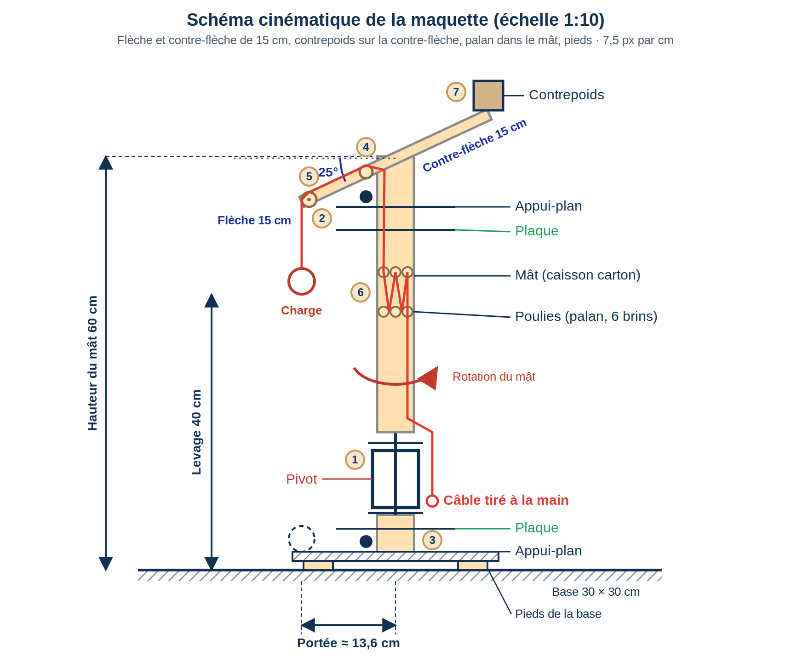

Ficelles
Coton Ø 1,5 mm (résiste à 1 kg) et jute Ø 2,5 mm (résiste à 2 kg).
La Brigada Nueve · Semaine d'intégration · Boucle 1 : Conception
Conception d'une grue manuelle, démontable et frugale, validée par une maquette à l'échelle 1:10.

Concevoir une grue capable de soulever 300 kg sur 4 m de haut avec une portée de 3 m, simulée par une maquette à l'échelle 1:10. Le cadre est le changement climatique : réduire nos émissions.
2,5 jours, soit 4 demi-journées, avec un concours à la fin.
Maths, algèbre, géométrie, trigonométrie, physique, bases de la mécanique, PFS, PFD.
| Étape | Durée | Qui |
|---|---|---|
| Intervention de l'expert en mécanique (prise de notes) | 2 h | Groupe |
| Mise en commun des notes, lien avec le projet | 15 min | Groupe |
| Analyse de la fiche IA | 15 min | Autonomie |
| Étude des ressources, puis choix du système | 1 h | Groupe |
| Discussion sur la conception la plus adaptée | 30 min | Groupe |
| Schéma cinématique | 1 h | Groupe |
| Note de calcul des charges (répartition) | ½ journée | Rezan, Amed, Victoria |
| Dimensionner la maquette et commencer le montage | ½ journée | Groupe |
| Vérifications et derniers détails | ½ journée | Groupe |
Le plan d'action a été fait sur 3 jours, alors qu'il fallait le faire sur une journée par boucle.
Coton Ø 1,5 mm (résiste à 1 kg) et jute Ø 2,5 mm (résiste à 2 kg).
Carton, fil de fer, deux plaques d'environ 9 × 12 cm pour rigidifier et supporter les axes.
Poulies de deux diamètres, engrenages de trois tailles, pics à brochette pour les axes.
Quelques boulons avec écrous, colle chaude.
Balance suspendue et poids de référence.
Principe : structure en portique (type A ou H) avec une poutre horizontale sur laquelle circule un chariot porte-palan. Les deux mouvements, vertical et horizontal, sont clairement séparés.
Avec notre matériel : le carton fait les montants et la poutre, les plaques renforcent les zones sous charge, les pics et le fil de fer servent d'axes. Sans palan à chaîne, on réalise un treuil manuel démultiplié.
Principe : un mât vertical pivotant porte une flèche. Le mouvement horizontal se fait par rotation du mât.
Version retenue : flèche de 25 cm inclinée de 25° sous l'horizontale, fixée au sommet d'un mât en caisson de carton. Le mât contient un palan à poulies : le câble, tiré à la main, passe sur les poulies du mât, monte sur la flèche et descend à la charge. Un contrepoids est fixé sur le mât, côté opposé à la flèche. Le mât tourne dans deux plaques de guidage (appuis plans) et un pivot central.
Limite : la stabilité, le pivot et la réduction, limitée par le nombre de poulies.


Principe : un trépied, un bras déformable en parallélogramme et un système de mouflage. La solution est compacte, légère et stable.
Limite : il faut plusieurs liaisons pivot bien alignées. En carton, avec des axes en pics ou en fil de fer, les jeux, frottements et déformations gênent le fonctionnement, et le réglage est difficile.
| Critère | Portique + chariot | Grue pivotante | Trépied / parallélogramme |
|---|---|---|---|
| Compatibilité avec le carton | Très bonne | Moyenne | Moyenne |
| Utilisation des poulies | Très bonne | Très bonne | Très bonne |
| Utilisation des engrenages | Très bonne | Très bonne | Moyenne |
| Facilité de fabrication | Très bonne | Moyenne | Faible |
| Stabilité de la maquette | Bonne | Plus délicate | Bonne mais complexe |
| Translation horizontale de 30 cm | Simple | Par rotation | Complexe |
| Levage vertical de 40 cm | Simple | Simple | Simple |
| Réglage / mise au point | Simple | Moyen | Complexe |
| Risque de blocage ou de jeu | Faible | Moyen | Élevé |
| Adéquation globale au matériel | Excellente | Correcte | Moyenne |
Ce tableau reprend l'analyse du document d'étude initial. Le groupe a retenu la grue pivotante (conception 2), avec une flèche inclinée, un palan dans le mât et un contrepoids ; ses points faibles (stabilité, pivot) sont traités dans la section suivante.
Nous avons retenu la grue pivotante (conception 2) : un mât en caisson de carton, qui tourne, porte une flèche de 25 cm inclinée de 25° sous l'horizontale. Le mât contient un palan à poulies : le câble, tiré à la main, passe sur les poulies, monte sur la flèche et descend à la charge.
Le déplacement horizontal est obtenu séparément, par la rotation du mât.
Fais glisser pour tourner autour de la grue. Le palan est dans le mât (transparent), le contrepoids de l'autre côté de la flèche. Les curseurs commandent la rotation du mât (flèche de 25 cm inclinée de 25°, soit une portée d'environ 22,7 cm sur la maquette) et le levage (4 m, soit 40 cm).
Effort = masse × 9,81 ÷ rapport de réduction. À titre d'exemple, un rapport de 1/60 avec 300 kg donne environ 49 N (5 kg). Pour un palan, le rapport vaut le nombre de brins n (par exemple 6). Modifie les valeurs pour tester.
Pour la maquette, le rapport réel reste à calculer : il faut relever les dents des engrenages et le diamètre du tambour. Le coton résiste à 1 kg et le jute à 2 kg, ce qui limite la charge d'essai.
| Étape | Durée | Qui |
|---|---|---|
| Dimensionner la maquette | 1 h | Groupe |
| Définir le système de levage et le système de réduction des charges | 1 h | Rezan |
| Écrire les instructions de montage | ||
| Refaire le schéma cinématique |
Les valeurs chiffrées ci-dessous sont des propositions de départ, à confirmer avec les mesures réelles du matériel. La position exacte du contrepoids et de la sortie du câble n'est pas dessinée : à préciser.

| Rep. | Liaison | Rôle |
|---|---|---|
| 1 | Pivot central, mât / bâti | Rotation du mât autour de l'axe vertical |
| 2 | Appui plan et butée, plaque haute | Guide le mât en partie haute |
| 3 | Appui plan et butée, plaque basse | Guide le mât en pied et reprend son poids |
| 4 | Poulie de renvoi, sur la flèche près du mât | Guidage du câble vers la flèche |
| 5 | Poulie de bout de flèche | Renvoi du câble vers la charge |
| 6 | Poulies du palan, dans le mât | Réduction de l'effort de traction |
| 7 | Fixation du contrepoids sur le mât | Équilibre le moment de la charge |
| Élément | Réel | Maquette | Remarque |
|---|---|---|---|
| Levage | 4 m | 40 cm | Imposé |
| Portée horizontale (axe du mât à la charge) | ≈ 2,27 m | ≈ 22,7 cm | Cahier des charges : 30 cm |
| Flèche | 2,5 m | 25 cm | Inclinée de 25° sous l'horizontale |
| Baisse du bout de flèche | ≈ 1,06 m | ≈ 10,6 cm | 25 × sin 25° |
| Hauteur du mât | 6 m | 60 cm | Bout de flèche à ≈ 49 cm : laisse 40 cm de levage |
| Section du mât (caisson) | ≈ 54 cm | ≈ 5,4 cm | Carton, renforcé |
| Base | 3 × 3 m | 30 × 30 cm | Porte les deux plaques de guidage |
Écart : avec une flèche de 25 cm à 25°, la portée est de 25 × cos 25° ≈ 22,7 cm, pas 30 cm. Pour 30 cm, il faudrait une flèche d'environ 33 cm (30 ÷ cos 25°). Au groupe de trancher.
Le contrepoids est collé sur le côté du mât opposé à la flèche, son centre à environ 4,2 cm de l'axe (demi-mât de 2,7 cm + demi-contrepoids de 1,5 cm) : masse du contrepoids × 4,2 cm = masse de la charge × 22,7 cm.
| Charge d'essai | Contrepoids nécessaire | Calcul |
|---|---|---|
| 0,5 kg | ≈ 2,7 kg | 0,5 × 22,7 ÷ 4,2 |
| 1 kg | ≈ 5,4 kg | 1 × 22,7 ÷ 4,2 |
| 2 kg | ≈ 10,8 kg | 2 × 22,7 ÷ 4,2 |
Chaîne : traction à la main → câble → palan de poulies dans le mât → poulie de renvoi → poulie de bout de flèche → charge.
Dans un palan à n brins, l'effort théorique est divisé par n et la longueur de câble à tirer est multipliée par n : F = m × 9,81 ÷ n et longueur = 40 cm × n.
| Brins n | Effort théorique (1 kg) | Câble à tirer pour 40 cm |
|---|---|---|
| 4 | ≈ 2,5 N | 1,6 m |
| 6 (schéma) | ≈ 1,6 N | 2,4 m |
| 8 | ≈ 1,2 N | 3,2 m |
À relever : nombre de poulies utilisables et leur diamètre, nombre de brins, masse de la charge, masse du contrepoids, effort mesuré.
Démontage : retirer la charge et le câble, décrocher le contrepoids, détacher la flèche, puis sortir le mât de l'axe et des plaques.
| Rep. | Désignation | Qté | Matériel / remarque |
|---|---|---|---|
| 1 | Base 30 × 30 cm | 1 | Carton, 2 épaisseurs collées |
| 2 | Lest de la base | 1 kg env. | Poids de référence, à ajuster |
| 3 | Embase basse (bloc carton) | 1 | Carton |
| 4 | Axe du pivot | 1 | Pic à brochette ou boulon avec écrou |
| 5 | Manchon du pivot central | 1 | Carton |
| 6 | Plaques de guidage (haute et basse) | 2 | Carton rigide ou plaques 9 × 12 cm, percées |
| 7 | Appuis plans et butées | 2 | Carton collé ; bague sur le mât |
| 8 | Mât en caisson (60 cm) | 1 | Carton, section 5,4 cm |
| 9 | Plaque de renfort du mât | 1 | Plaque 9 × 12 cm |
| 10 | Poulies du palan | 6 | Poulies fournies, à confirmer |
| 11 | Axes des poulies | 6 à 8 | Pics à brochette |
| 12 | Flèche (25 cm) | 1 | Carton renforcé, inclinée de 25° |
| 13 | Poulie de renvoi et poulie de bout de flèche | 2 | Poulies fournies |
| 14 | Contrepoids | ≈ 2,7 à 5,4 kg | Poids de référence, fixé sur le mât |
| 15 | Câble : ficelle de jute Ø 2,5 mm | ≈ 4 m | Résiste à 2 kg |
| 16 | Poignée de traction | 1 | Anneau en fil de fer |
| 17 | Charge d'essai | 0,5 à 1 kg | Poids de référence |
| 18 | Boulons avec écrous | 2 à 4 | Selon les assemblages |
| 19 | Colle chaude | — | Assemblages |
| 20 | Balance suspendue | 1 | Mesure de l'effort de traction |
Quantités indicatives, à confirmer après le montage.
Ce qui a été fait jusqu'ici, dans l'ordre.